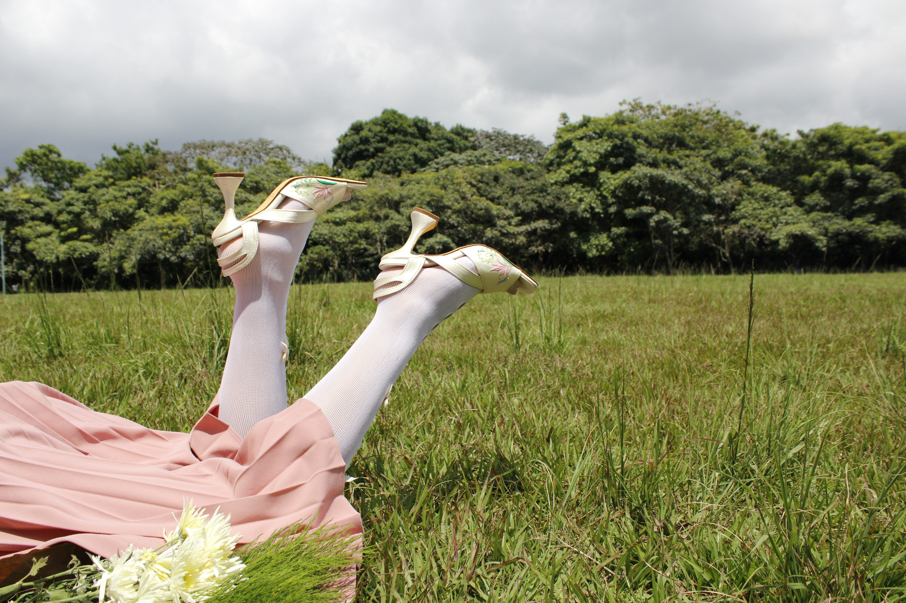
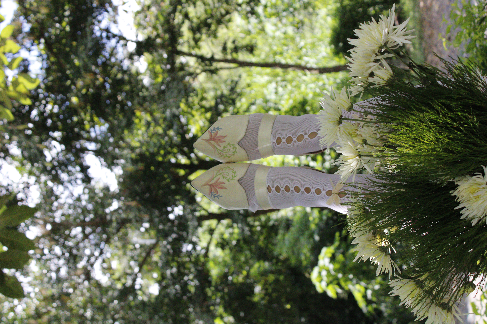
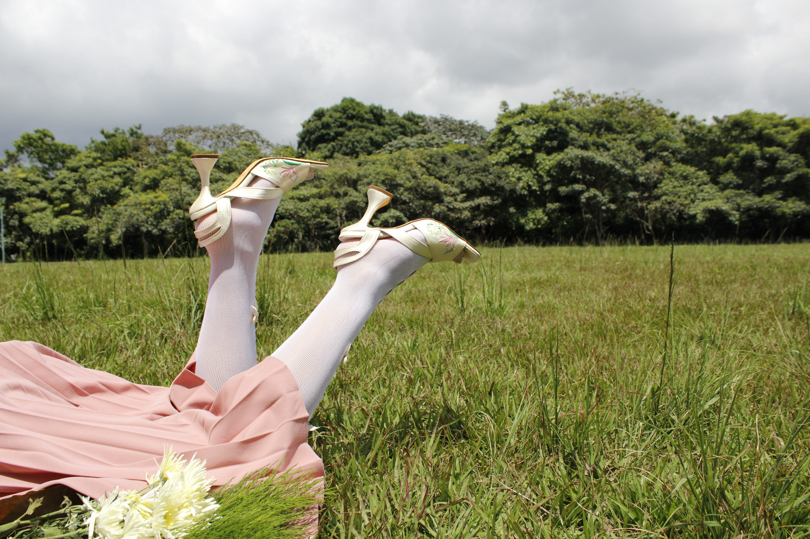
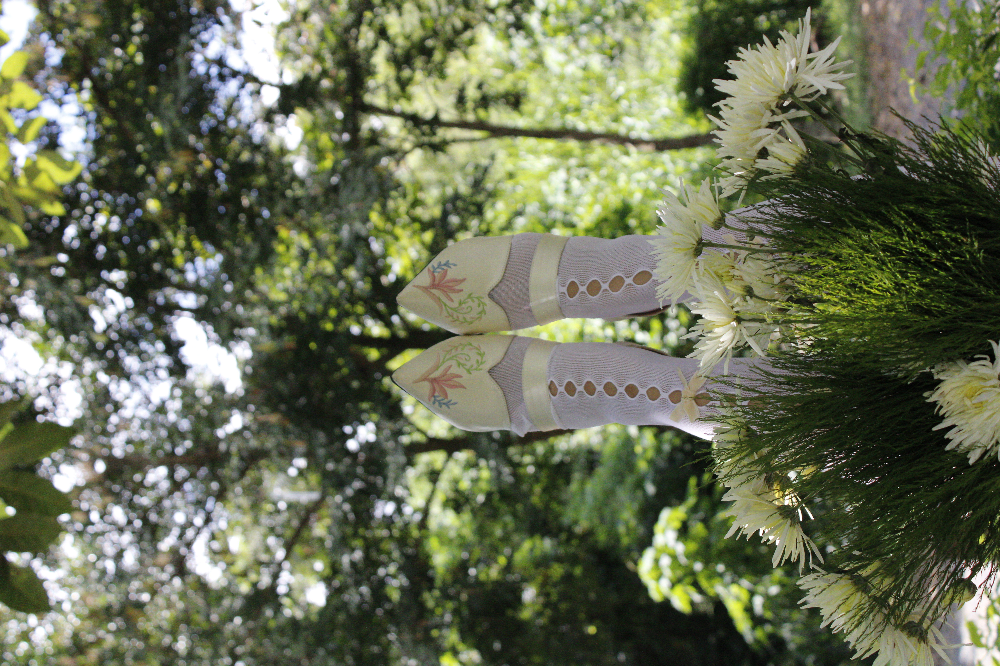

Delicadeza en Glamour
El proyecto exalta la elegancia de la abuela como una cualidad interior
reflejada en su actitud y esencia, observada desde la mirada admirativa
de una niña. Inspirada en su figura, la colección de calzado fue
elaborada mediante la técnica de upcycling, reutilizando las suelas de
dos pares de tacones. El primer diseño, cerrado y con cinta en el
empeine, presenta un bordado de la flor del paraíso reinterpretada; el
segundo, una sandalia, incorpora el mismo motivo floral bordado en los
laterales, fusionando memoria, estética y sostenibilidad.
Desde niña la
admiré: radiante y serena, con la dulzura en sus manos y la fuerza en su
paso. Su elegancia no habitaba en la tela, sino en el alma que brillaba
con valor. Hoy, aunque el tiempo haya pasado, su esencia vive en mí,
bordada en mi memoria y en mi manera de andar.

 


